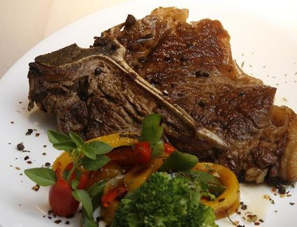

Meat is valued as a complete protein food containing all the amino acids necessary for the human body. The fat of meat, which varies widely with the species, quality, and cut, is a valuable source of energy and also influences the flavour, juiciness, and tenderness of the lean. Parts such as livers, kidneys, hearts, and other portions are excellent sources of vitamins and of essential minerals, easily assimilated by the human system.
Meat digests somewhat slowly, but 95 percent of meat protein and 96 percent of the fat are digested. Fats tend to retard the digestion of other foods; thus, meat with a reasonable proportion of fat remains longer in the stomach, delaying hunger and giving “staying power.” Extractives in meat cause a flow of saliva and gastric juices, creating the desire to eat and ensuring ease of digestion.